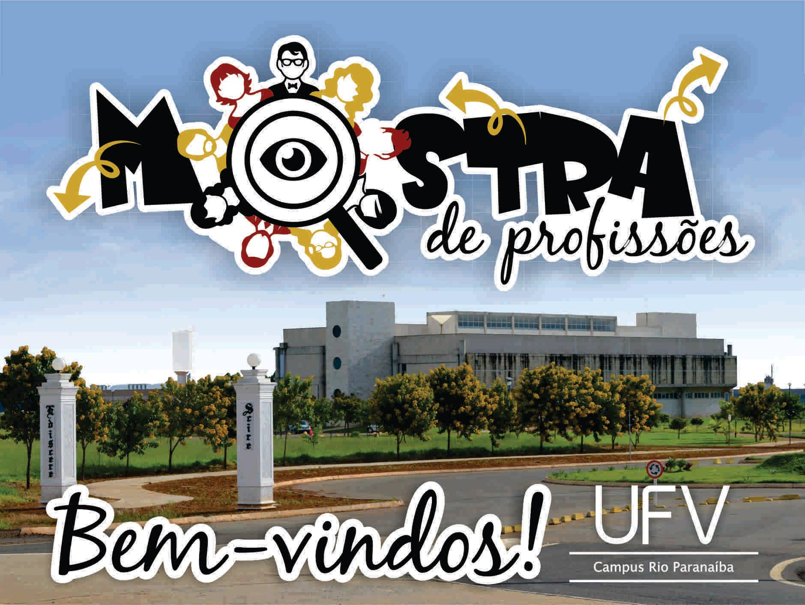
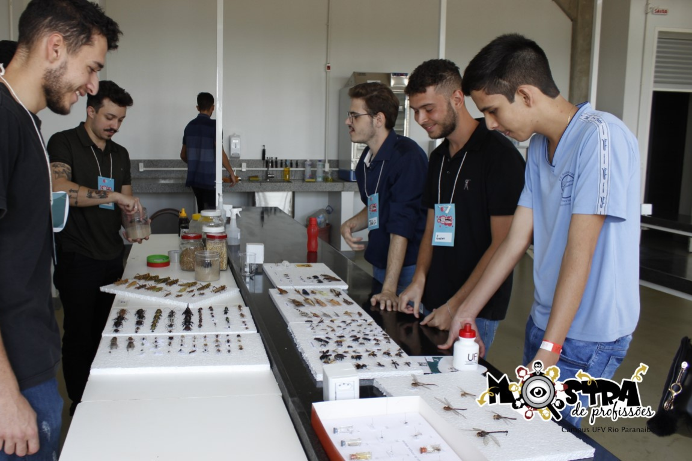
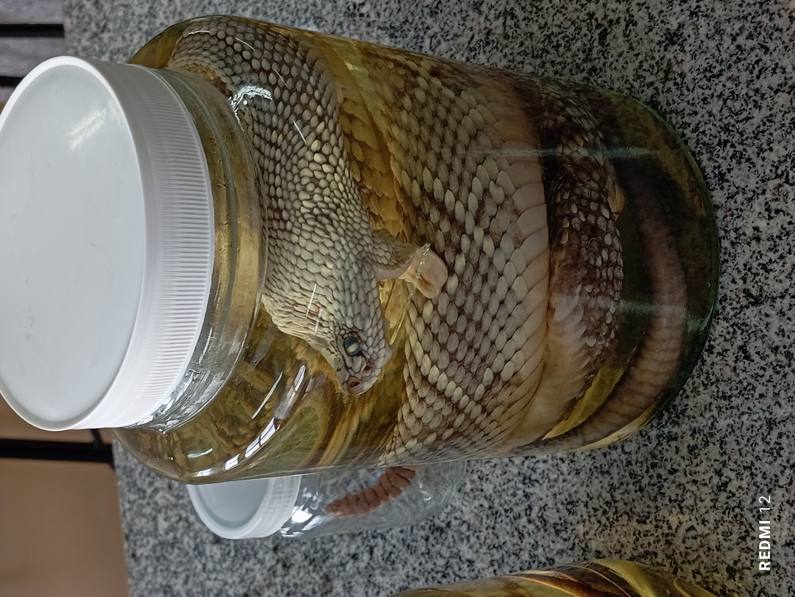
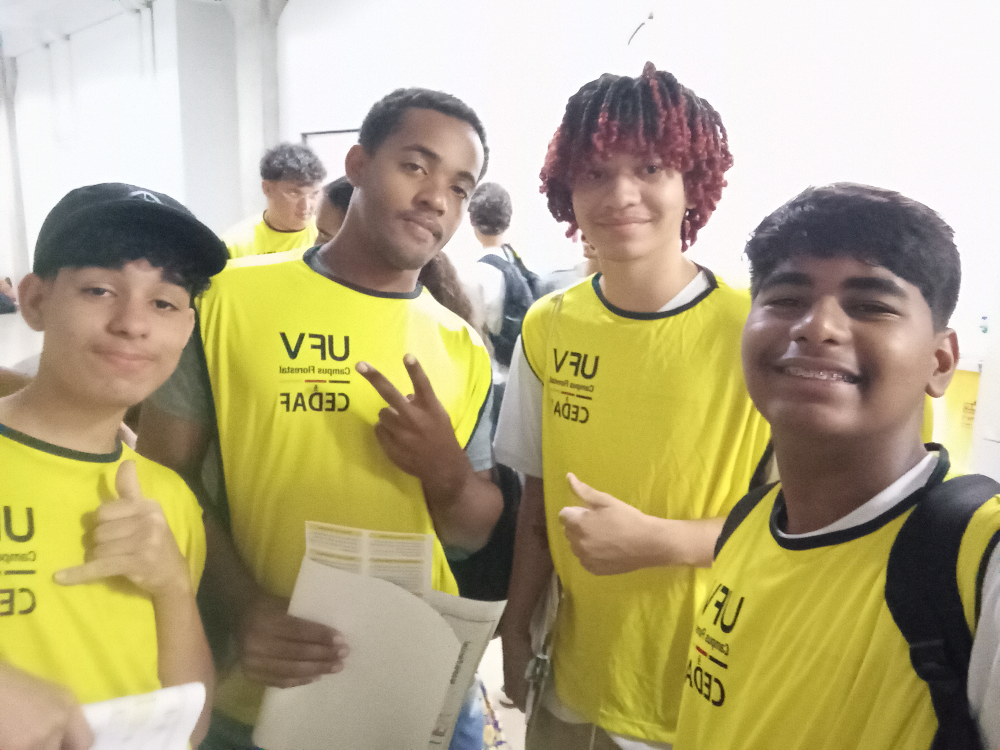
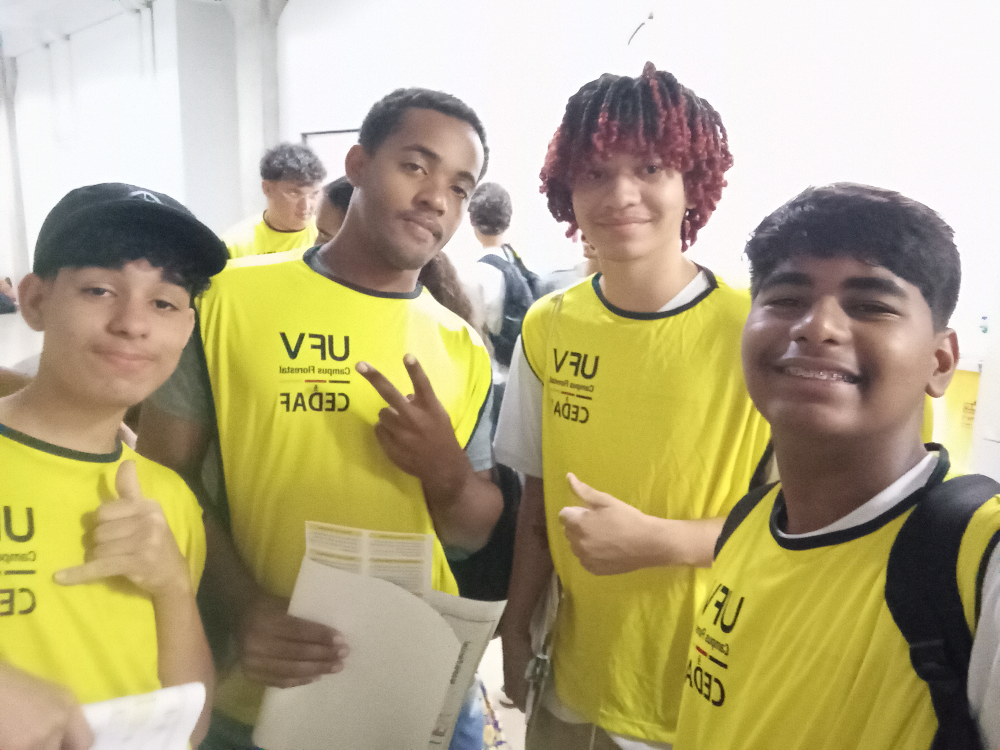
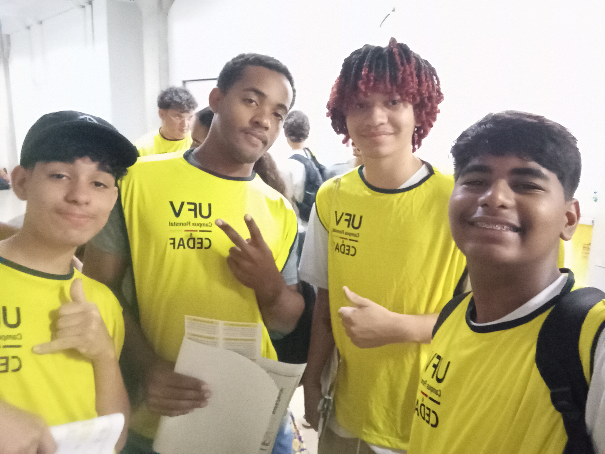

Mostra de Profissões

A Mostra de Profissões é um evento institucional organizado pela Universidade Federal de Viçosa – Campus Florestal (UFV Florestal) com o objetivo de apresentar aos estudantes do ensino médio e técnico da região os cursos ofertados pelo campus, suas áreas de atuação e possibilidades de carreira.
História e Organização
- Realizada anualmente, geralmente no segundo semestre, antes do período de vestibulares e ENEM.
- Organizada pela Direção de Ensino, coordenações de curso, setor de comunicação e estudantes voluntários do campus.
- Conta com a participação de todas as coordenações de curso, professores, técnico-administrativos e estudantes.
Objetivos
- Divulgar os cursos técnicos e superiores ofertados pela UFV Florestal.
- Orientar vocacionalmente estudantes do ensino médio sobre as áreas de atuação e mercado de trabalho de cada profissão.
- Incentivar o ingresso no ensino superior público, principalmente no campus Florestal.
- Aproximar a universidade da comunidade escolar regional.
Atividades Desenvolvidas
Durante a Mostra de Profissões, são oferecidas diversas atividades, incluindo:Estandes de apresentação dos cursos
- Cada curso monta seu estande com banners, folders, equipamentos, experimentos e demonstrações práticas.
- Estudantes e professores explicam a grade curricular, projetos, estágios, extensão e possibilidades de carreira.
Visitas guiadas ao campus
- Tour pelos laboratórios, áreas experimentais, biblioteca, salas de aula, auditórios e instalações do campus.
- Apresentação da estrutura oferecida pela UFV Florestal aos seus estudantes.
Palestras e rodas de conversa
- Temas sobre mercado de trabalho, escolha profissional, ingresso na universidade e vida acadêmica.
Demonstrações práticas
- Experimentos, protótipos, robótica, exposições de animais, plantas, alimentos e softwares desenvolvidos pelos cursos.
Atendimento individualizado
- Orientação vocacional com professores e psicólogos do campus.
- Explicações sobre bolsas, assistência estudantil, moradia, alimentação e oportunidades de estágio.
Participação
Público-alvo: estudantes do ensino médio, técnico, professores de escolas estaduais e particulares da região, comunidade em geral. Recebe centenas de visitantes em um único dia, sendo um dos maiores eventos de extensão do campus.Impactos
Aproxima a UFV Florestal da comunidade regional, divulgando seus cursos e infraestrutura. Ajuda os estudantes a escolherem sua futura profissão com maior segurança e conhecimento. Divulga a importância do ensino superior público como oportunidade de formação e ascensão social. Motiva a comunidade acadêmica a demonstrar seus projetos, aumentando o orgulho institucional. Contribui para o aumento do número de candidatos nos processos seletivos da UFV Florestal.Galeria




 

